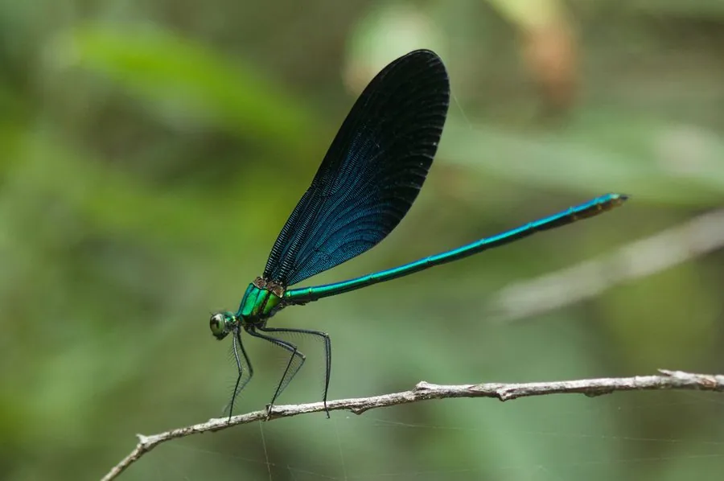

昆虫 · 动物界
透顶单脉色蟌 Matrona basilaris

翅面蓝黑带金属光泽、体型较大的色蟌，栖息于清澈山溪，雌虫翅端有白斑，稚虫水生，捕食小型水生昆虫。
- 分类
- 门节肢动物门纲昆虫纲目蜻蜓目科色蟌科属单脉色蟌属
- 栖息环境
- 海拔数百米至一千五百米的清澈山溪、林间溪流和阴湿沟谷
- 地理分布
- 中国南方与西南山地，包括浙江、福建、江西、湖南、广西、贵州和云南
- 保护级别
- 尚无保护级别；溪流污染与河道硬化是主要威胁
物种志
透顶单脉色蟌的体长约五至六厘米，翅展约八厘米，是色蟌科中体型较大的种类。它的翅面呈蓝黑色，带蓝绿至紫色的金属光泽，翅脉细密，翅端略尖，雌虫前翅末端有一块明显的白色斑块，称为伪翅痣，透顶之名由此而来。它的身体细长，胸部墨绿色带金属光泽，腹部蓝黑，末端有肛附器，复眼分离。
它分布于中国南方和西南的山地，包括浙江、福建、江西、湖南、广西、贵州和云南，栖息在海拔数百米至一千五百米的清澈山溪、林间溪流和阴湿沟谷，成虫常停歇在溪边的岩石或枝条上，飞行缓慢，捕食蚊、蝇等小型昆虫。它属于半变态昆虫，卵产在水生植物或溪边湿土中，稚虫水生，用直肠鳃呼吸，捕食水生昆虫和甲壳类，羽化时爬到溪边石上蜕壳。它一年发生一代，成虫多见于夏季。目前尚无保护级别，溪流污染和河道硬化是主要威胁。
形态与习性
- 体长约五至六厘米，翅展约八厘米
- 翅蓝黑色带蓝绿至紫色金属光泽
- 识别雌虫前翅末端有白色伪翅痣
- 变态半变态，稚虫水生，用直肠鳃呼吸
- 食性捕食蚊、蝇等小型昆虫
- 发生世代一年一代，成虫多见于夏季
趣味知识
- 它的翅膀黑得发蓝，阳光一照会泛出紫绿色的金属光。
- 雌虫翅尖那块白斑不是真的翅痣，而是透光的薄区。
- 稚虫在水里靠直肠里的鳃呼吸，羽化时才爬出水面。